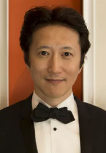

Hideaki Sorachi
Progenitor de Gintama. Parece ser que su originalidad a la hora de adaptar a comedia otras series muy conocidas dentro de un entorno muy distinto al original es una de las cosas que le han llevado a esta posición. Este autor, que tuvo como asistente al también famoso Kenta Shinohara, ha crecido de tal manera durante todos estos años que ha conseguido meterse al público en el bolsillo con títulos como Bankara, 13 y Dandelion, el one-shot que dio origen a Gintama.
Eiichiro Oda

Akira Toriyama

Hiromu Arakawa

Hirohiko Araki

Masashi Kishimoto

 |
 |
 |
 |
 |
 |